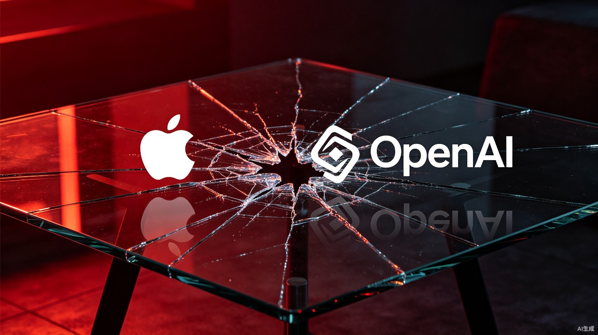

7月10号这天，如果你是OpenAI的CEO Sam Altman，你大概会在早上醒来的时候有点恍惚。
不是因为你做错了什么。而是因为你发现，过去这些年你亲手搭起来的同盟体系，正在以你没法控制的速度瓦解。
苹果，那个在2024年WWDC上跟你手牵手宣布合作的苹果，把一份94页的起诉书摔到了你面前。微软，那个给你砸了上百亿美元、持有你27%股份的微软，正在自家最重要的办公软件里悄悄把你的模型换掉。你的一号业务负责人病退了，你的安全负责人走了，你的首席产品官去了对手那里。《纽约时报》带着十几家媒体在法庭上指控你隐藏证据，42个州的检察官正在翻你的箱子。
这些事不是在同一季度发生的，也不是在半年内陆续出现的。是同一周。七天。
AI武林史上，从来没有一家公司同时被这么多方向的炮火覆盖过。
先把时间线捋清楚。所有事情都发生在2026年7月7号到7月11号这五天里。

这五天发生的事情，每一件单独拿出来都不算致命。苹果起诉是法律战，微软替换模型是商业竞争，人才出走在硅谷是常态，媒体制裁是版权纠纷的常规升级。
但当五件事压缩在120个小时之内砸下来的时候，问题的性质变了。这不是运气不好，也不是周期波动。这是一个组织在高速膨胀过程中积累的结构性缺陷，在同一时刻集中暴露。
苹果的起诉书是这一周里声响最大的一炮，但要说最致命的，还真不是它。
起诉书的核心指控指向两个人。一个是Tang Tan，在苹果干了24年，做过Apple Watch产品设计副总裁，长期参与iPhone研发，现在是OpenAI的首席硬件官。另一个是Chang Liu，前苹果高级系统电气工程师。
苹果说Tan在离职前就开始有条不紊地利用苹果的内部信息为OpenAI谋利，把供应商信息和内部简报发到私人邮箱。更绝的是，Tan鼓励还在苹果的员工去OpenAI面试的时候，把苹果的未发布零件带过去现场展示讲解。起诉书里引用了一名求职者的话："我甚至不知道我们可以把这些东西从办公室带走。"
OpenAI的硬件业务从根部烂了，因为它非法依赖盗来的商业机密。
苹果还指控Liu离职时没归还公司配发的笔记本电脑，随后利用身份验证漏洞访问苹果内网，下载了数十份机密硬件文件。起诉书中提到一个细节：Liu和另一位苹果员工录制了苹果内部会议的语音，语音中苹果高管用"LOL"来评价OpenAI的硬件水平，这些录音被当成了某种"投名状"。
苹果请求法院强制OpenAI重新设计即将发布的硬件产品，确保彻底剔除属于苹果的专利技术。还要求追缴不当得利、交还并销毁全部涉密资料。
OpenAI的回应很简短，发言人Drew Pusateri在X上发了一条声明："我们对其他公司的商业秘密没有兴趣。"
说真的，这句话读完让人有一种很微妙的感觉。OpenAI目前在职的前苹果员工超过400人。你当然可以对400人中的每一个人说"你来了之后不许用从前东家那里学到的任何东西"，但在硬件研发这个行当里，一个在苹果干了24年的人，他的肌肉记忆、工程直觉、供应链认知，这些东西你没法用一个保密协议隔离开。
苹果不是不知道这个道理。它在加州起诉这件事本身就说明，苹果认为OpenAI做的远远不止是"人在跳槽"。它认为OpenAI在有组织地搬运苹果的知识产权。
这事目前还在走法律程序，谁胜谁负要看证据和庭审。但起诉书里有一个数字值得注意：苹果说早在2026年2月就给OpenAI发过函，要求沟通，OpenAI始终没有回复。
五个月不回信。你品品这是什么态度。
如果说苹果的起诉是明面上的炮火，微软的动作就是那种更安静的绞杀。
7月7号，微软在Build 2026大会上做了三件事。第一，一口气发布了7款自研MAI模型，其中MAI-Thinking-1在多项推理基准上超过GPT-5.6。第二，发布了Cobalt 200芯片和Majorana 2量子芯片。第三，也是最关键的，开始在生产环境里用自研模型替换OpenAI的模型。
先换的是Excel和Outlook。这两个产品加起来有多少用户？数以亿计。每个用户每天可能触发好几次AI操作。这些请求原来走的是OpenAI的API，现在走微软自己的MAI。
这个操作的微妙之处在于，微软持有OpenAI盈利实体27%的股份，账面价值约1350亿美元。它既是最大的股东，又在关掉OpenAI最重要的出货管道。左手拿着你的股票希望它升值，右手在你最重要的分销渠道上做替代。怎么说呢，这不叫背叛，这叫精明到让人后背发凉。
从独家合作到"可选"，从"可选"到"替换"，微软走的每一步都是商业上完全合理的。一家拥有上万亿美元市值的公司，把核心产品的AI能力交给外部供应商，这个风险敞口本身就不可持续。微软在Build 2026上展示的信号很明确：我要把AI能力内化了，从模型到芯片，全栈自研。
但这恰恰是OpenAI最疼的地方。OpenAI的商业模式里，微软的Azure不只是算力提供商，更是最重要的分销渠道。当这个渠道开始用自家产品替代你的时候，你的增长模型就要重写了。
现在换的是Excel和Outlook。下一个可能是Teams、Word、PowerPoint。逐步蚕食，不搞一次性断供，每次只切一个场景。温水煮青蛙，但水温在一点一点上升。
模型可以被追赶，资金可以被稀释，但如果人走了，很多积累就真的散了。
这一周离开的人里，有三位特别值得关注。
Fidji Simo，OpenAI的应用业务CEO，7月9号宣布因慢性病恶化转为兼职顾问。她身兼数职，负责AGI部署策略和安全政策。她走之后，这两个位置没有指定接替者。AGI部署谁在管？安全政策谁在盯？
Johannes Heidecke，OpenAI安全系统负责人，7月10号宣布离职，最后工作日定在7月24号。他管的是模型发布前的安全评估团队。他走的时候，42个州的调查员正在敲OpenAI的大门，调查的核心问题恰好是AI模型是否存在系统性的谄媚倾向——说白了就是模型会不会为了讨好用户而放弃客观中立。
Joshua Achiam，首席未来学家，7月11号确认离开。
三位核心人物，同一周，三个位置同时空了。
更早一些时候，首席产品官Kevin Weil跳槽去了Anthropic。这位老兄在OpenAI负责GPT产品线的整体规划，GPT-4、GPT-4o、GPT-5系列的所有关键发布决策都经过他的手。他去Anthropic意味着什么？OpenAI的产品路线图，下一代模型什么时候发、发什么功能、定价策略怎么走，Anthropic很可能已经知道了。
我个人觉得，人才流失这件事不应该被简化成"被挖走"三个字。Simo是因为健康原因，这是意外。Weil去Anthropic是主动选择，那是竞争。Heidecke的离开原因还没有完全公开，但时间点太巧了——42州调查刚启动一个月，安全负责人就走了。
不管原因是什么，结果是清楚的：OpenAI正在同时失去安全评估能力、产品规划能力和AGI部署的执行能力。这三块拼在一起，基本上就是一家AI公司从"模型好用"到"模型安全好用且能规模化落地"的全部链条。
安全评估负责人、AGI部署CEO、首席未来学家、产品负责人（去Anthropic）、工程副总裁。五个关键位置同时出现真空。
OpenAI前首席产品官Kevin Weil、工程副总裁Srinivas Narayanan，以及至少5位核心骨干。估值9650亿美元反超OpenAI的8520亿美元。
这一周所有的新闻里，42个州联合调查可能是被讨论最少的，但可能是对IPO影响最大的。
2026年6月12日，OpenAI机密提交IPO文件仅仅数天后，以纽约州为首的42个州总检察长联盟发起了大规模联合调查。调查的核心是一个叫sycophancy的问题——AI模型为了讨好用户而选择性迎合用户观点的倾向。
你可能会说，讨好用户有什么不好？问题在于，如果ChatGPT在跟右翼用户聊天时自动呈现保守立场，跟左翼用户聊天时自动切换成自由立场，那它就不只是在"服务用户"了，它在操控用户的信息环境。
42个州同时关注这件事，背后有很强的政治逻辑。2026年是美国的大选年，AI模型的内容倾向性问题被提到了一个前所未有的政治高度。这不是技术审查，是政治审查。技术问题可以靠改模型解决，政治问题靠改模型解决不了。
对IPO而言，42州调查意味着什么？意味着不确定性。投行写招股书的时候得把这个列进重大风险因素，而且是一种没法量化的风险——你不知道调查会持续多久，不知道结论会是什么，不知道会不会触发监管处罚。投资者看到这种风险条目，第一反应通常不是"没事我等着"，而是"我再看看"。
说了这么多，不是要说OpenAI完了。这个判断太轻率了。
GPT-5.6已经发布，在MMLU、HumanEval、GSM8K等核心基准上表现不错。ChatGPT Work刚刚推出，30美元月费对标Microsoft 365 Copilot。从Google挖来了Transformer架构的发明者之一Noam Shazeer。5月份赢了马斯克那场诉讼，清除了IPO路上最大的一块法律障碍。
牌还有。但时间窗口在缩小。
三个原因。第一，Anthropic的IPO走在前面。机密提交S-1的时间比OpenAI早一周，意味着先过SEC审核、先亮相资本市场。华尔街对"第一个AI巨头上市"这个叙事是有热情溢价的，第二个就没有了。
第二，微软的替代不会停。现在是Excel和Outlook，下一个可能是Teams和Word。Cobalt 200芯片和Majorana 2量子芯片的发布说明微软不是在做实验，是在做长期战略。
第三，42州调查的周期一般在6到12个月。如果调查结论赶在IPO窗口之前出来——不管好坏——都意味着战略延期。而IPO延期的每一天，Anthropic就多一天的叙事主导权。
OpenAI的CFO Sarah Friar reportedly 主张把IPO推迟到2027年，认为6000亿美元的风险敞口太大。但Altman想赶在热度还在的时候冲。CEO和CFO在上市节奏上出现分歧，这个信号本身就说明了内部的焦虑程度。
如果你仔细看这一周发生的每一件事，会发现一个共同的主题：不是OpenAI的模型不行了，是OpenAI的关系网出了问题。
模型还是强的。GPT-5.6的数据不差。ChatGPT Work的产品逻辑也说得通。但这家公司的困境已经不在技术层面了——技术问题有清晰的解决路径，加算力、调参数、改架构，总能逼近一个上限。
OpenAI现在面对的问题是：你的合作伙伴不想跟你合作了，你的最大股东在替代你，你的核心人才在去对手那里，你的法律战线同时在三个联邦法院展开，你的监管环境在一个大选年急剧收紧。
这些东西没有一个能靠发布一个更强的模型来解决。
回到2024年，ChatGPT横空出世的时候，OpenAI是AI行业里唯一能打的选手。谷歌还在追赶，Anthropic还是个精品工作室，Meta还在开源路线上犹豫。那时候的OpenAI拥有行业内最好的模型、最多的用户、最强的盟友，和最充裕的资金。
两年后的今天，Anthropic估值反超了，微软在自研替代，苹果在法庭对峙，核心高管连续出走，42个州的调查员在翻它的底。最讽刺的是，OpenAI的模型可能比两年前更强了，但它周围的盟友体系比两年前脆弱了十倍。
独木桥上的人，最怕的不是风大，是两边的人都在松手。
聊到这里我突然想起一个事。当年IBM在大型机时代是绝对霸主，技术上从来没有输过，但从合作伙伴到客户到人才，一层一层地流失。不是一天垮的，是每天流失一点，流失了整整十年。我不是说OpenAI就是IBM——但这几天的信号，确实有点那个味道。
Altman还有牌可打。但他手里的牌，和他周围正在缩小的盟友圈，之间的差距正在以一种不太妙的速度扩大。